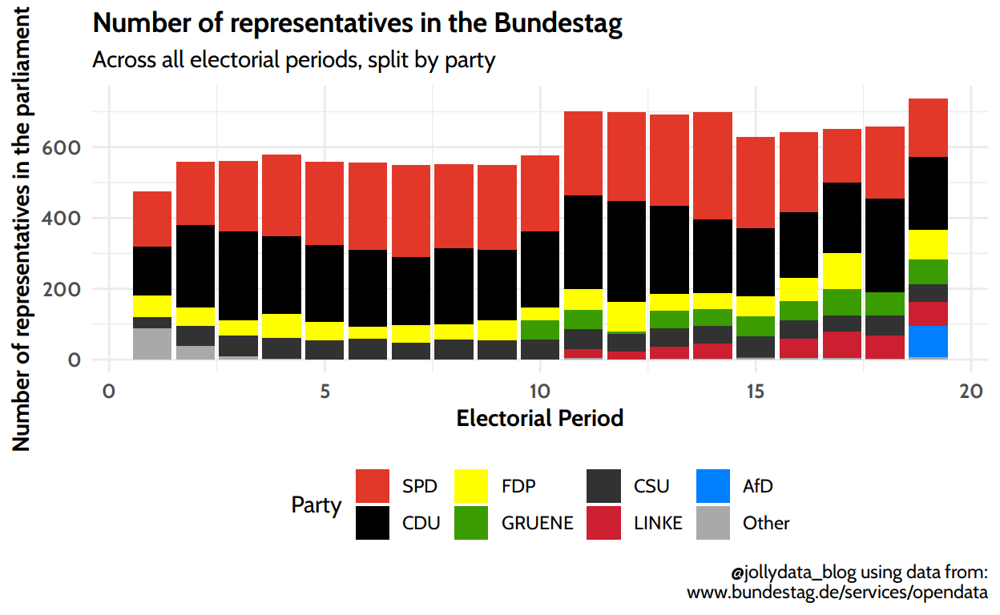
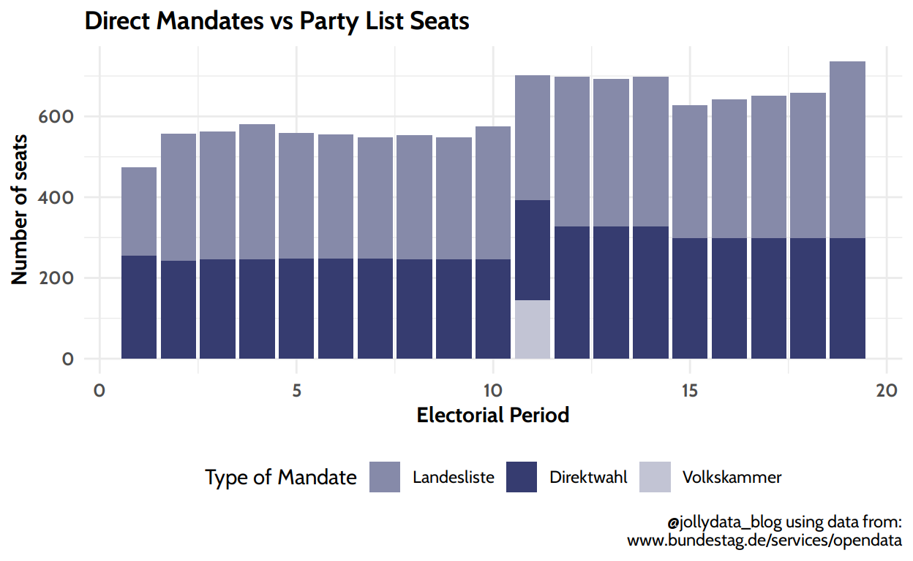
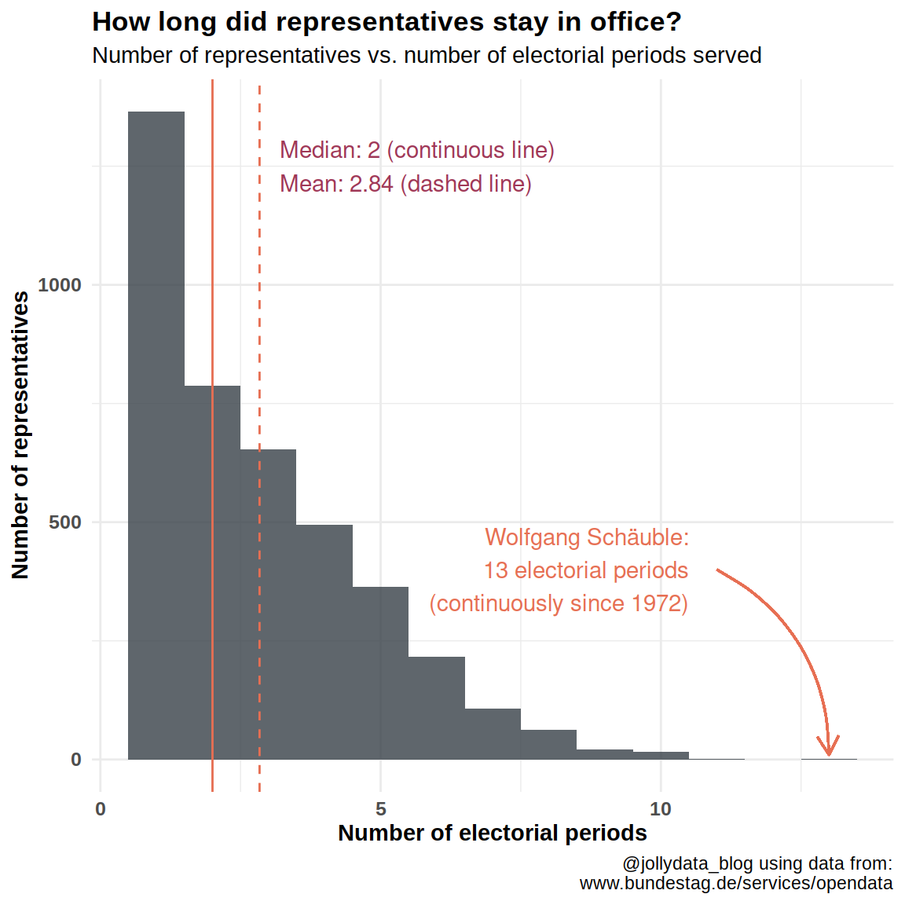
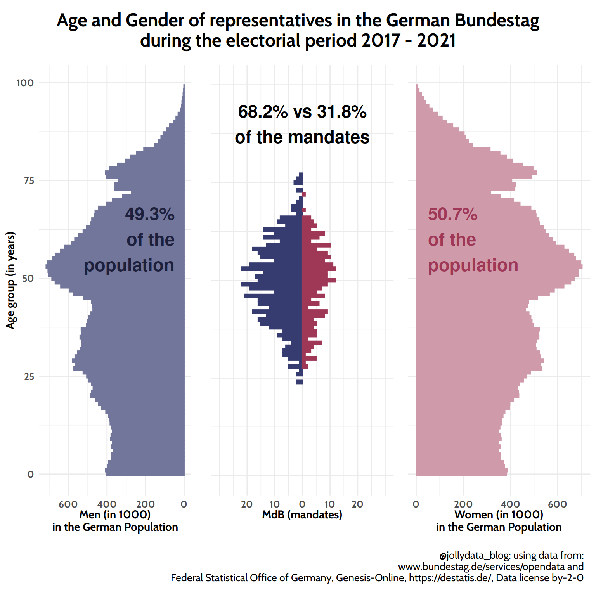
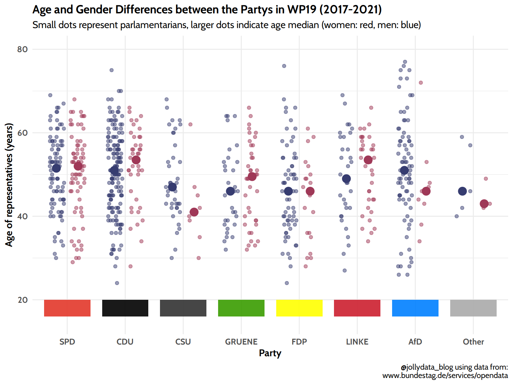
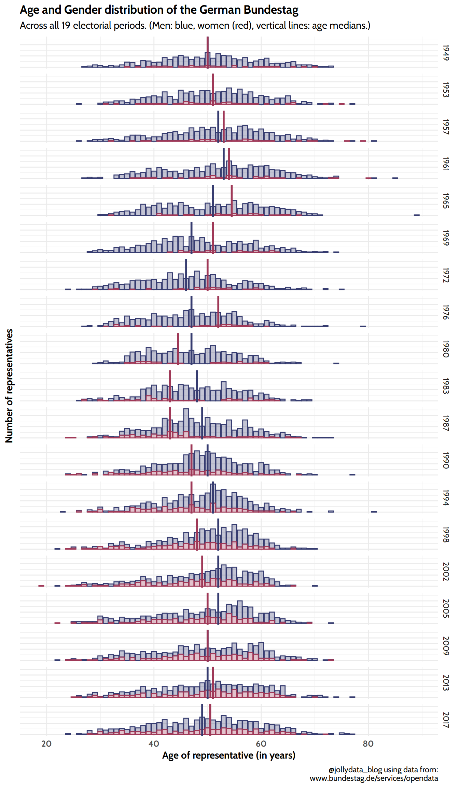

An analysis of the german national parliament (“Bundestag”). This first part focuses on biographical data of the elected representatives and the composition of the parliament over time.
Since its first assembly on September 7th 1949 the “Bundestag” has been the legislative democratic representation of Germany. Due to the separation of Germany after World War II the Bundestag represented the western german population until 1990 and was initially located in the city “Bonn”. The first assembly representing the unified Federal Republic of Germany was elected on December 2nd 1990 for the 12th legislative period of the parliament.
On June 20th 1991 the parliament decided to move from Bonn to the capital of Germany Berlin. The relocation took place in 1999.
At the time of writing, the Bundestag is in its 19th legislative period, the next election will take place on September 26th 2021.
Data
Other Sources
Preview image for this blog post: Alektor89, Public domain, via Wikimedia Commons
The Bundestag-data was provided/downloaded as XML-file. So after reading the data it has to be transformed to a rectangular data.
If you’re not interested in the technical details, you can jump to the next section, where I will start with the first exploratory analysis.
Before all, we need to load the necessary packages:
library("tidyverse")
library("rmarkdown")
library("xml2")
library("XML")
library("gt")
library("cowplot") # for combined age pyramid
library("lubridate")
library("ggridges")
Then, read the data on the MdBs. The steps taken are explained in the comments.
# read the XML file
xml_data <- read_xml("../../../data_sources/2021_bundestag/MdB-Stammdaten-data/MDB_STAMMDATEN.XML")
# parse XML to a list and make a tibble from the list
mdb_list <- xmlParse(xml_data) %>% xmlToList()
mdb_origin <- tibble(
xml_data = mdb_list
)
# unnest the names column to identify the members of parliament
mdb_namen <- mdb_origin[-1,] %>%
unnest_wider(xml_data) %>%
unnest_longer(NAMEN) %>%
unnest_wider(NAMEN)
# some people had name changes and are therefore listed more than once.
# first these duplicates will be removed, then
# the legislative periods are unnested
mdb_WP <- mdb_namen %>%
# sort the duplicates by date of change, only keep the last entry (=last known name)
mutate(HISTORIE_VON = as.Date(HISTORIE_VON, format = "%d.%m.%Y")) %>%
group_by(ID) %>%
arrange(desc(HISTORIE_VON)) %>%
distinct(ID, .keep_all = TRUE) %>%
ungroup() %>%
# unnest the electorial periods
unnest_longer(WAHLPERIODEN) %>%
unnest_wider(WAHLPERIODEN)
# unnest the biographical data
mdb_main_full <- mdb_WP %>%
unnest_wider(BIOGRAFISCHE_ANGABEN)
# remove unneeded columns for this post
mdb_main <- mdb_main_full %>%
select(-c(VITA_KURZ, RELIGION, NAMEN_id, VEROEFFENTLICHUNGSPFLICHTIGES,
HISTORIE_VON, HISTORIE_BIS, FAMILIENSTAND, GEBURTSLAND, GEBURTSORT,
INSTITUTIONEN, WAHLPERIODEN_id, ORTSZUSATZ)) %>%
mutate(GEBURTSDATUM = as.Date(GEBURTSDATUM, format = "%d.%m.%Y"),
MDBWP_VON = as.Date(MDBWP_VON, format = "%d.%m.%Y"),
MDBWP_BIS = as.Date(MDBWP_BIS, format = "%d.%m.%Y"),
WP = as.numeric(WP))
Some smaller parties obtained a few seats in the early years of the Bundestag. While being important in a comprehensive historical setting, for the scope of this post they are of minor significance and I will comprise them in a collective “Other” category. Some others merged into larger parties and I will count them to the currently existing merged party if there is a clear political connection, e.g. PDS and WASG merged into “Die Linke” or e.g. “Grüne” and “Bündnis 90” merged into “Bündnis 90/Die Grüne”. 2
A few manual adjustments had to be made to fill missing values. To fill the gaps of party membership I used a file from the Bundestag listing all representatives and their respective membership for each electorial period.3
Also, for one representative, Werner Kuhn, there was no type of seat mentioned. He succeded Paul Krüger, who had a seat in the 14th electorial period via the party list and stepped down from his mandate before the end of the period. To keep things simpler here, I filled the missing mandate type for Mr. Kuhn with “Landesliste” as well.
# parties to collapse:
greens <- c("BÜNDNIS 90/DIE GRÜNEN", "GRÜNE", "DIE GRÜNEN/BÜNDNIS 90")
lefts <- c("DIE LINKE.", "PDS", "PDS/LL")
others <- c( "WAV", "SRP", "BP", "DRP", "FU", "KPD", "DZP", "GB/ BHE", "CVP", "CSUS", "DP", "DPB", "DPS", "DSU", "LKR", "Plos")
mdb_compact <- mdb_main %>%
mutate( # manually fill the NAs
PARTEI_KURZ = case_when(
ID == "11000580" ~ "SPD", # Alfred Frenzel
ID == "11002068" ~ "Other", # Helmuth Schranz
ID == "11001333" ~ "Other", # Heinrich Leuchtgens
TRUE ~ PARTEI_KURZ
)
) %>%
mutate( # collapse many parties in the few relevant vs. other
Party = fct_collapse(PARTEI_KURZ,
GRUENE = greens,
LINKE = lefts,
Other = others
)
) %>%
mutate(MANDATSART = replace_na(MANDATSART, "Landesliste")) # add missing mandate for Werner Kuhn. See text above for details.
party_palette <- c("GRUENE"= "#3a9c00",
"SPD" = "#e2382a",
"LINKE" = "#cc1f2f",
"CDU" = "#000000",
"CSU" = "#323232",
"FDP" = "yellow",
"AfD" = "#0080FF",
"Other"="#a9a9a9")
The following plot is not really pretty, as the colors generally representing the parties were used. In this post I want to focus on the people of the Bundestag. It is therefore noteworthy mentioning, that the number of representatives visualized below is not necessarily the number of seats for the parliamentary group. Some elected parliamentarians left office due to personal reasons, career changes or other reasons. Those seats were then given to succeeding representatives from the same party to keep the elected mandates in the Bundestag constant. The data provided by the Bundestag (and used here) is a list of all politicians serving in each electoral periods, so including successors in office. If there were many changes in a parliamentary group, this may distort the political proportions. 4
mdb_compact %>%
group_by(WP, Party) %>%
summarise(total_seats = n()) %>%
ggplot(aes(WP, total_seats, fill = reorder(Party, -total_seats))) +
geom_col() + # alternativ geom_area()
scale_fill_manual(values = party_palette, name = "Party") +
labs(
title = "Number of representatives in the Bundestag",
subtitle = "Across all electorial periods, split by party",
x = "Electorial Period",
y= "Number of representatives in the parliament",
caption = "@jollydata_blog using data from:\nwww.bundestag.de/services/opendata"
) +
theme_minimal() +
theme(text = element_text(
family = "Cabin"),
plot.title = element_text(
face = "bold",
hjust = 0),
axis.title = element_text(
# color = rgb(105, 105, 105, maxColorValue = 255),
face = "bold",
size = rel(1)),
axis.text = element_text(
# color = rgb(105, 105, 105, maxColorValue = 255),
face = "bold",
size = rel(0.85)),
legend.position = "bottom",
)

If you’re not familiar with the german national voting process, you can have a look at this short paragraph in Wikipedia. In short, there are two ways to get elected: either you are personally elected as the representative of your constituency (direct mandate or in german “Direktwahl”). Currently 299 seats are elected this way. The second possibility is by obtaining a seat via your federal state’s party list (“Landesliste”). These addidtional 299 (or more) seats are assigned proportionally to the percentage of votes for each party.5
Plot
Now let’s visualize the types of mandates over time:
mdb_compact %>%
group_by(WP) %>%
count(MANDATSART) %>%
mutate(
MANDATSART = fct_relevel(MANDATSART, levels = c("Landesliste", "Volkskammer", "Direktwahl"))
) %>%
ggplot(aes(WP, n, fill = MANDATSART)) +
geom_col() +
scale_fill_manual(values = c("#868aa9", "#363c70", "#c2c4d4"), name = "Type of Mandate") +
labs(
title = "Direct Mandates vs Party List Seats",
x = "Electorial Period",
y = "Number of seats",
caption = "@jollydata_blog using data from:\nwww.bundestag.de/services/opendata"
) +
theme_minimal() +
theme(text = element_text(
family = "Cabin"),
plot.title = element_text(
face = "bold",
hjust = 0),
axis.title = element_text(
# color = rgb(105, 105, 105, maxColorValue = 255),
face = "bold",
size = rel(1)),
axis.text = element_text(
# color = rgb(105, 105, 105, maxColorValue = 255),
face = "bold",
size = rel(0.85)),
legend.position = "bottom",
)

Figures
mdb_mandate_wide <- mdb_compact %>%
group_by(WP) %>%
count(MANDATSART) %>%
pivot_wider(id_cols = WP, names_from = MANDATSART, values_from = n, values_fill = 0L)
mdb_mandate_wide %>%
paged_table()
Which is more common: direct mandate or seats via the party list? The data is quite clear: Only in the first Bundestag there were more direct mandates:
mdb_mandate_wide %>%
filter(Direktwahl > Landesliste) %>%
paged_table()
The “Volkskammer” was the parliament of former Eastern Germany. After the German reunification (October 3rd 1990) 145 members of the last “Volkskammer” were included in the then 11th Bundestag. This mixed parliament was only active for a short period, as on December 2nd 1990 the first national vote of unified germany elected the 12th Bundestag.
While overall more seats are assigned via the parties’ lists, there is variation between the parties:
mdb_compact %>%
group_by(Party) %>%
count(MANDATSART) %>%
ungroup() %>%
pivot_wider(id_cols = c(Party), names_from = MANDATSART, values_from = n, values_fill = 0L) %>%
arrange(Direktwahl / Landesliste) %>%
gt(
rowname_col = "Party"
) %>%
tab_source_note(source_note = "@jollydata_blog using data from:\nwww.bundestag.de/services/opendata") %>%
tab_header(
title = md("**Direct vs party list mandates of the political Parties**"),
subtitle = md("*Cumulative seats over all 19 elective periods*")
) %>%
tab_footnote(
footnote = md("Members of the last *Volkskammer* of Eastern Germany that were incorporated into the 11th Bundestag."),
locations = cells_column_labels(columns = vars(Volkskammer))
) %>%
cols_align(align = "right",
columns = 2:4) %>%
tab_options(
heading.align = "left",
column_labels.border.top.color = "white",
column_labels.border.top.width = px(3),
column_labels.border.bottom.color = "black",
table_body.hlines.color = "white",
table_body.vlines.color = "white",
table_body.border.top.color = "black",
table_body.border.top.width = px(3),
table.border.bottom.color = "black",
table.border.bottom.width = px(3)
) %>%
tab_style(
style = list(
cell_text(font = "Inconsolata")
),
locations = list(
cells_column_labels(
everything()
),
cells_body(
everything()
)
)
)
| Direct vs party list mandates of the political Parties | |||
|---|---|---|---|
| Cumulative seats over all 19 elective periods | |||
| Direktwahl | Landesliste | Volkskammer1 | |
| GRUENE | 5 | 524 | 7 |
| FDP | 21 | 1006 | 9 |
| AfD | 4 | 86 | 0 |
| LINKE | 39 | 325 | 24 |
| Other | 43 | 127 | 5 |
| SPD | 1941 | 2278 | 33 |
| CDU | 2370 | 1715 | 66 |
| CSU | 779 | 218 | 1 |
| @jollydata_blog using data from: www.bundestag.de/services/opendata | |||
|
1
Members of the last Volkskammer of Eastern Germany that were incorporated into the 11th Bundestag.
|
|||
As you can see above, most parties have more party list seats than direct mandates. Only the Christian Democratic/Social Unions have more direct mandates.
As a bridge to the next section, where I will take a closer look at the biographical data of the representatives, I’ll take a closer look at how long representatives served in the Bundestag.
# A tibble: 1 x 2
`mean(n, na.rm = T)` `median(n, na.rm = T)`
<dbl> <int>
1 2.84 2mdb_mandate_count %>%
ggplot(aes(n)) +
geom_histogram(bins = 13, alpha = 0.8, fill = "#384048") +
geom_vline(xintercept = 2, color = "#e66f53") +
geom_vline(xintercept = 2.84, color = "#e66f53", linetype = "dashed") +
annotate(
geom = "text",
x = 3.2, y = 1250,
label = "Median: 2 (continuous line)\nMean: 2.84 (dashed line)",
hjust = 0,
color = "#9f3857"
) +
geom_curve(
aes(x = 11, y = 400, xend = 13, yend = 10),
data = mdb_mandate_count,
curvature = -0.3,
arrow = arrow(length = unit(0.03, "npc")),
color = "#e66f53"
) +
annotate(geom = "text",
x = 10.5, y = 400,
label="Wolfgang Schäuble:\n13 electorial periods\n(continuously since 1972)",
hjust=1,
color = "#e66f53") +
labs(
title = "How long did representatives stay in office?",
subtitle = "Number of representatives vs. number of electorial periods served",
x = "Number of electorial periods",
y = "Number of representatives",
caption = "@jollydata_blog using data from:\nwww.bundestag.de/services/opendata"
) +
theme_minimal() +
theme(legend.position = "none") +
theme(text = element_text(
family = "Bitter"),
plot.title = element_text(
face = "bold",
hjust = 0),
axis.title = element_text(
# color = rgb(105, 105, 105, maxColorValue = 255),
face = "bold",
size = rel(1)),
axis.text = element_text(
# color = rgb(105, 105, 105, maxColorValue = 255),
face = "bold",
size = rel(0.85)),
legend.position = "none")

The average number of periods served is almost 3 (around 2.84). However the distribution is exponentially falling, so about half of the representatives have only served one or two periods (median 2). The leading politician in terms of this is Wolfgang Schäuble, who currently is also president of the Bundestag.6 He was continuously elected since 1972 for 13 electorial periods and always had a seat via a direct mandate:
mdb_compact %>%
filter(ID=="11001938") %>%
count(MANDATSART)
# A tibble: 1 x 2
MANDATSART n
* <chr> <int>
1 Direktwahl 13As I want to compare the ages of the representatives with the population data I have to load the Destatis-Data. There are several other steps necessary to reshape the data and to join the population-data with the parliament-data. So this section starts code-heavy, but we’ll see nice results towards the end.
# source: https://de.wikipedia.org/wiki/Deutscher_Bundestag
wp_tbl <- tibble(
WP = 1:19,
year = c(1949, 1953, 1957, 1961, 1965, 1969, 1972, 1976, 1980, 1983, 1987, 1990, 1994, 1998, 2002, 2005, 2009, 2013, 2017)
)
pop_untidy <- read_csv2("../../../data_sources/2021_bundestag/destatis/14_bevoelkerungsvorausberechnung_daten") %>%
select(-c(Variante, Bev)) %>%
filter(Simulationsjahr <= 2019) # data after that is predictions and not of relevance for the analysis.
pop_tidy <- pop_untidy %>%
pivot_longer(-c(Simulationsjahr, mw), names_to = "age_group", values_to = "pop")
# to facilitate plotting and analysis the age-variable needs to be
# converted to an integer. The 1 or 2 digits of the age are taken of the
# first occurrence of the regular expression. In this case this extracts
# the lower end of the age-group (e.g. 5 from the age group "5 to 6")
pop_tidy_age <- pop_tidy %>%
mutate(age = as.numeric(str_extract(age_group, "\\d{1,2}"))) %>%
rename(year = Simulationsjahr) %>%
select(-age_group)
wp_age <- pop_tidy_age %>%
inner_join(wp_tbl, by = "year")
In order to visualize an age-pyramid, the male population data is converted to “negative”, so it can be plottet in the opposite direction of the female population data:
wp_age_pop_mw <- wp_age %>%
mutate(
pop_mw = ifelse(mw == "m", -pop, pop)
)
How old were the representatives and of which gender at the time of election? There are two “cohorts”: those initially elected into office and those that succeded early leaving representatives. In the initial group there were 218 women and 491 men out of 709 representatives (according to the official publication of the “Federal Returning Officer” aka “Bundeswahlleiter”)7
The data supplied by the Bundestag returns the following for the initial representatives:
mdb_compact %>%
filter(MDBWP_VON == "2017-10-24") %>%
count(GESCHLECHT)
# A tibble: 2 x 2
GESCHLECHT n
* <chr> <int>
1 männlich 490
2 weiblich 219So there are contradicting numbers. I might have to go through the whole list of all representatives to find the difference. While this discrepancy bothers me, I decided to continue relying on the Bundestag-data, as the difference is considerably small, the overall number is the same and also the number of seats for each party is correct, which makes the possible error acceptable in the scope of this blog post. But for the sake of transparency this shall be mentioned here for the reader as a possible limtation of my analysis.
As mentioned in the beginning, whenever I’m not explicitly working on seats in the Bundestag, I will always use the complete cohort in each electoral period including the succeeding candidates.
As next steps I calculate the age (in years) of each rep. at the day of election, and inner_join the population data into the representatives data.
mdb_ages <- mdb_compact %>%
mutate(
age_at_election = floor(time_length(difftime(MDBWP_VON, GEBURTSDATUM), "years")),
mw = str_trunc(GESCHLECHT, 1, ellipsis = "")
) %>%
group_by(WP, mw) %>%
count(age_at_election)
mdb_pop <- wp_age_pop_mw %>%
left_join(mdb_ages, by = c("WP" = "WP", "mw" = "mw", "age" = "age_at_election")) %>%
mutate(n_mdb = ifelse(mw == "m", -n, n))
mdb_compact %>%
filter(WP == "19") %>%
count(GESCHLECHT)
# A tibble: 2 x 2
GESCHLECHT n
* <chr> <int>
1 männlich 503
2 weiblich 234Next the three single plots are being created for the male/female side of age pyramid as well as the center part with the age distribution of the representatives:
p_pop_w <- mdb_pop %>%
filter(year == 2017, mw == "w") %>%
ggplot(aes(age, pop_mw)) +
geom_col(fill = "#CF9BAB", color = "#CF9BAB") +
scale_y_continuous(breaks = c(0, 200, 400, 600), labels = c("0", "200", "400", "600")) +
coord_flip() +
labs(y = "Women (in 1000)\nin the German Population") +
annotate(
geom = "text",
x = 60,
y = 50,
hjust = 0,
label = "50.7%\nof the\npopulation",
size = 6,
fontface = "bold",
fontfamily = "Cabin",
color = "#9f3857"
) +
theme_minimal() +
theme(legend.position = "none",
axis.text.y = element_blank(),
axis.ticks.y = element_blank(),
axis.title.y = element_blank()
) +
theme(text = element_text(
family = "Cabin"),
plot.title = element_text(
face = "bold",
hjust = 0),
axis.title = element_text(
# color = rgb(105, 105, 105, maxColorValue = 255),
face = "bold",
size = rel(1)),
axis.text = element_text(
# color = rgb(105, 105, 105, maxColorValue = 255),
face = "bold",
size = rel(0.85)),
legend.position = "none")
p_pop_m <- mdb_pop %>%
filter(year == 2017, mw == "m") %>%
ggplot(aes(age, pop_mw)) +
geom_col(fill = "#72769a", color = "#72769a") +
scale_y_continuous(breaks = c(-600, -400, -200, 0, 200, 400, 600), labels = c("600", "400", "200", "0", "200", "400", "600")) +
coord_flip() +
labs(
y = "Men (in 1000)\nin the German Population",
x = "Age group (in years)"
) +
annotate(
geom = "text",
x = 60,
y = -50,
hjust = 1,
label = "49.3%\nof the\npopulation",
size = 6,
fontface = "bold",
fontfamily = "Cabin",
color = "#1D203C"
) +
theme_minimal() +
theme(legend.position = "none") +
theme(text = element_text(
family = "Cabin"),
plot.title = element_text(
face = "bold",
hjust = 0),
axis.title = element_text(
# color = rgb(105, 105, 105, maxColorValue = 255),
face = "bold",
size = rel(1)),
axis.text = element_text(
# color = rgb(105, 105, 105, maxColorValue = 255),
face = "bold",
size = rel(0.85)),
legend.position = "none")
p_mdb <- mdb_pop %>%
filter(year == 2017) %>%
ggplot(aes(age, n_mdb, fill=mw, color = mw)) +
geom_col() +
scale_fill_manual(values = c("#363c70", "#9f3857")) +
scale_color_manual(values = c("#363c70", "#9f3857")) +
scale_y_continuous(breaks = c(-20, -10, 0, 10, 20), labels = c("20", "10", "0", "10", "20"), limits = c(-30, 30)) +
scale_x_continuous(limits = c(0, 100)) +
coord_flip() +
labs(y = "MdB (mandates)\n") +
annotate(
geom = "text",
x = 90,
y = 0,
hjust = 0.5,
label = "68.2% vs 31.8%\nof the mandates",
size = 6,
fontface = "bold",
fontfamily = "Cabin"
) +
theme_minimal() +
theme(legend.position = "none",
axis.text.y = element_blank(),
axis.ticks.y = element_blank(),
axis.title.y = element_blank()
) +
theme(text = element_text(
family = "Cabin"),
plot.title = element_text(
face = "bold",
hjust = 0),
axis.title = element_text(
# color = rgb(105, 105, 105, maxColorValue = 255),
face = "bold",
size = rel(1)),
axis.text = element_text(
# color = rgb(105, 105, 105, maxColorValue = 255),
face = "bold",
size = rel(0.85)),
legend.position = "none")
As final part of this section the three plots are combined into the aggregated plot:
ggdraw() +
draw_plot(p_pop_m, x=0, y=0.1, width = 0.33, height = 0.8) +
draw_plot(p_mdb, x=0.34, y=0.1, width = 0.33, height = 0.8) +
draw_plot(p_pop_w, x=0.67, y=0.1, width = 0.33, height = 0.8) +
draw_label("Age and Gender of representatives in the German Bundestag\nduring the electorial period 2017 - 2021",
x = 0.5,
y = 0.95,
hjust = 0.5,
fontfamily = "Cabin",
fontface = "bold",
size = 18)+
draw_label("@jollydata_blog: using data from:\nwww.bundestag.de/services/opendata and\nFederal Statistical Office of Germany, Genesis-Online, https://destatis.de/, Data license by-2-0",
x = 0.98,
y = 0.05,
hjust = 1,
fontfamily = "Cabin",
size = 10)

The visual impression here is clear as the numbers are: women make up slightly more than half of the population, but only take less than a third of the seats in the Bundestag. There seems to be a particular drop in women below 50 years of age. Additionally, while the outline of the representative-distribution roughly follows the curve of the population between ages 40 to 60, the convex curve of the population from 18 to 35 years is not reflected by the elected representatives.
The next aspect I’ll look into, is the hypothesis, that more conservative parties tend to have older representatives. Below are visual and statistical analyses of this hypothesis.
Plot
For the visualization, I chose to split the data by Party and by gender as well. As the numbers are acceptably small, I used a scatterplot to visualize every single representative and, by this, make the female fraction in each party visible.
mdb_compact %>%
filter(WP == "19") %>%
mutate(
age_at_election = floor(time_length(difftime(MDBWP_VON, GEBURTSDATUM), "years")),
mw = str_trunc(GESCHLECHT, 1, ellipsis = "")
) %>%
mutate(Party = fct_relevel(Party,
"SPD", "CDU", "CSU",
"GRUENE", "FDP", "LINKE",
"AfD", "Other")) %>%
ggplot(aes(Party, age_at_election, color = mw)) +
geom_point(position = position_jitterdodge(dodge.width = 0.7, jitter.width = 0.25), alpha = 0.5) +
stat_summary(fun = "median", geom = "point", size = 4, position = position_dodge(width = 0.75))+
scale_color_manual(values = c("#363c70", "#9f3857")) +
scale_y_continuous(limits = c(15, 80)) +
labs(
title = "Age and Gender Differences between the Partys in WP19 (2017-2021)",
subtitle = "Small dots represent parlamentarians, larger dots indicate age median (women: red, men: blue)",
x = "Party",
y = "Age of representatives (years)",
caption = "@jollydata_blog using data from:\nwww.bundestag.de/services/opendata"
) +
annotate("rect", # SPD
xmin = 0.6, xmax = 1.4,
ymin = 16, ymax = 20, alpha = 0.9, fill = "#e2382a") +
annotate("rect", # CDU
xmin = 1.6, xmax = 2.4,
ymin = 16, ymax = 20, alpha = 0.9, fill = "#000000") +
annotate("rect", # CSU
xmin = 2.6, xmax = 3.4,
ymin = 16, ymax = 20, alpha = 0.9, fill = "#323232") +
annotate("rect", # GRUENE
xmin = 3.6, xmax = 4.4,
ymin = 16, ymax = 20, alpha = 0.9, fill = "#3a9c00") +
annotate("rect", # FDP
xmin = 4.6, xmax = 5.4,
ymin = 16, ymax = 20, alpha = 0.9, fill = "yellow") +
annotate("rect", # LINKE
xmin = 5.6, xmax = 6.4,
ymin = 16, ymax = 20, alpha = 0.9, fill = "#cc1f2f") +
annotate("rect", # AfD
xmin = 6.6, xmax = 7.4,
ymin = 16, ymax = 20, alpha = 0.9, fill = "#0080FF") +
annotate("rect", # Other
xmin = 7.6, xmax = 8.4,
ymin = 16, ymax = 20, alpha = 0.9, fill = "#a9a9a9") +
theme_minimal() +
theme(legend.position = "none") +
theme(text = element_text(
family = "Cabin"),
plot.title = element_text(
face = "bold",
hjust = 0),
axis.title = element_text(
# color = rgb(105, 105, 105, maxColorValue = 255),
face = "bold",
size = rel(1)),
axis.text = element_text(
# color = rgb(105, 105, 105, maxColorValue = 255),
face = "bold",
size = rel(0.85)))

Statistics
To list the number of gender vs party in 2017 we’ll look at a simple crosstable:
wp19 <- mdb_compact %>%
filter(WP == "19") %>%
mutate(
age_at_election = floor(time_length(difftime(MDBWP_VON, GEBURTSDATUM), "years")),
mw = str_trunc(GESCHLECHT, 1, ellipsis = "")
) %>%
mutate(Party = fct_relevel(Party,
"SPD", "CDU", "CSU",
"GRUENE", "FDP", "LINKE",
"AfD", "Other"))
table(wp19$Party, wp19$mw)
m w
SPD 92 73
CDU 161 44
CSU 39 9
GRUENE 31 40
FDP 64 20
LINKE 32 36
AfD 79 9
Other 5 3Looking at the above distributions I don’t assume normality of the distributions. I’ll therefor use a Kruskal-Wallis test to compare the age across all parties and if there’s significant differences, I’ll do follow-up pairwise Wilcoxon tests with correction for multiplicity.
kruskal.test(age_at_election ~ Party, data = wp19)
Kruskal-Wallis rank sum test
data: age_at_election by Party
Kruskal-Wallis chi-squared = 23.992, df = 7, p-value =
0.001143pairwise.wilcox.test(wp19$age_at_election, wp19$Party, p.adjust.method = "holm") %>%
broom::tidy() %>%
arrange(`p.value`) %>%
paged_table()
As the pairwise comparisons show, the liberal democratic party (FDP) has significantly younger representatives compared to the two largest parties CDU (Christian Democratic Union, “conservative center”) and SPD (Social Democratic Party, “center-left”). So with this, I cannot truly accept the above mentioned hypothesis: There seems to be no significant age gradient along the “consvervative-progressive” axis.
The gender gap is widest in the parties CSU and AfD, while both GRUENE and LINKE have more women serving in the parliament than men.
Are representatives younger or older now compared to the early days? What was the fraction of female representatives over time? This is what this section is about. To keep the visualization clean, I omitted the labels on the y-Axis, as the relation between men / women is more important, than the absolute numbers.
age_medians <- mdb_compact %>%
mutate(
age_at_election = floor(time_length(difftime(MDBWP_VON, GEBURTSDATUM), "years")),
mw = str_trunc(GESCHLECHT, 1, ellipsis = "")
) %>%
group_by(WP, mw) %>%
summarise(age_med = median(age_at_election, na.rm = TRUE))
mdb_ages %>%
left_join(age_medians, by = c("mw", "WP")) %>%
left_join(wp_tbl, by = "WP") %>%
ggplot(aes(age_at_election, n)) +
geom_col(aes(fill = mw, color = mw), alpha = 0.3) +
geom_vline(aes(xintercept = age_med, color = mw), size = 1) +
scale_fill_manual(values = c("#363c70", "#9f3857")) +
scale_color_manual(values = c("#363c70", "#9f3857")) +
scale_y_continuous(breaks = c(0, 20, 40), labels = c("0", "20", "40")) +
facet_grid(rows = vars(year)) +
labs(
title = "Age and Gender distribution of the German Bundestag",
subtitle = "Across all 19 electorial periods. (Men: blue, women (red), vertical lines: age medians.)",
x = "Age of representative (in years)",
y = "Number of representatives",
caption = "@jollydata_blog using data from:\nwww.bundestag.de/services/opendata"
) +
theme_minimal() +
theme(legend.position = "none",
axis.text.y = element_blank()) +
theme(text = element_text(
family = "Cabin"),
plot.title = element_text(
face = "bold",
hjust = 0),
axis.title = element_text(
# color = rgb(105, 105, 105, maxColorValue = 255),
face = "bold",
size = rel(1)),
axis.text = element_text(
# color = rgb(105, 105, 105, maxColorValue = 255),
face = "bold",
size = rel(0.85)))

This concludes the first part of this series on the Bundestag. If you’ve read up to here, thanks for your interest and I hope you will also enjoy the next parts.
Main takeaways from this article are:
For non-german readers: “MdB” stands for “Mitglied des Bundestages”, which means “member of the parliament”↩︎
For reference I used the Wikipedia Article on the fractions.↩︎
“Verzeichnis der Mitglieder des Deutschen Bundestages und Personenverzeichnis”, state 2021-03-03, accessed on 2021-03-04↩︎
For a good visual representation of the actual proportional seats, including the government forming groups the government see this graphic↩︎
This sytem in recent elections caused more and more transitional mandates resulting in an ever larger parliament, as seen in the plot below.↩︎
According to the Order of precedence the president of the Bundestag comes second, after the President of Germany, and before the Chancellor↩︎
“Wahl zum 19. Deutschen Bundestag am 24. September 2017”, Heft 5, Teil 1, p. 61↩︎
{kind=link}
{kind=link}